SUNCRYPTO PRODUCT · UI/UX · FINTECH
Make
crypto feel
simple.
crypto feel
simple.
₿
Ξ
01 / PRODUCT DESIGN
Crypto, simplified.
Exchange experience · UI/UX · Design systems · Motion

Let's talk ↗UI/UX · WEB · VISUAL DESIGN
I'm Rizwan Khan — a UI/UX, web and visual designer from India. I turn complex ideas into clean, premium interfaces that people understand, remember and want to use.
Selected work
A mix of product interfaces, websites, campaigns and visual systems across crypto, fintech, real estate and digital brands.
Exchange experience · UI/UX · Design systems · Motion
Real estate · Web design · Interaction · Development
Campaigns · Art direction · 3D visuals · Social
A little context
02 / 04I'm a UI/UX designer who also works across web design, graphic design and front-end development. That combination helps me think beyond a screen and design the complete experience.
My work often sits at the intersection of product, brand and technology — especially crypto, fintech, real estate and modern digital businesses. I care about typography, spacing, hierarchy, motion and the details that make a product feel premium.
Start a conversation ↗Capabilities
User flows, wireframes, prototypes, design systems and high-fidelity interfaces built around clarity and conversion.
RESEARCH → UX → UI → PROTOTYPEResponsive websites with strong visual hierarchy, smooth motion, clean code and a premium finish.
STRUCTURE → VISUAL → MOTION → BUILDCampaign artwork, social creatives, 3D concepts and brand visuals designed to stop the scroll.
CONCEPT → ART DIRECTION → ASSETSGOOD DESIGN DOESN'T
SHOUT. IT CLICKS.
How I work
Context, users, constraints and the real problem underneath the brief.
Sketch, test and push directions until the strongest idea earns its place.
Type, spacing, interactions, motion and systems — the craft pass matters.
A polished design ready to build, explain and actually use.
Have a project in mind?